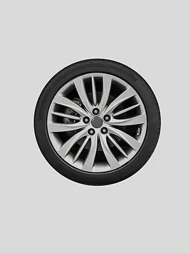

Chrome

Ціна: $125
Країна: Японія
Постачальник: WHEELBU
Кількість в наявності: 160
Опис:
Шина Chrome - це інноваційний вибір для тих, хто шукає поєднання стилю, продуктивності та економії
пального. Ці шини мають сучасний дизайн та технології, що забезпечують високу якість і надійність на
дорозі.
Особливості:
Елегантний дизайн: Шина Chrome відзначається стильним і сучасним дизайном, який додає
елегантності і привабливості вашому автомобілю.
Висока прохідність: Завдяки спеціальному протектору і технологіям гуми, ці шини забезпечують
відмінну адгезію і прохідність на різних типах доріг і покриттів.
Економія пального: Інноваційні матеріали і конструкція шини Chrome дозволяють знизити опір
коченню, що забезпечує ефективне використання пального і знижує викиди в атмосферу.
Характеристики:
Розмір: 235/45R18
Індекс навантаження: 98
Індекс швидкості: W
Сезонність: Зимова